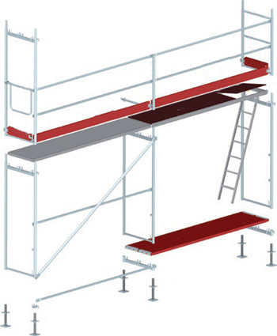
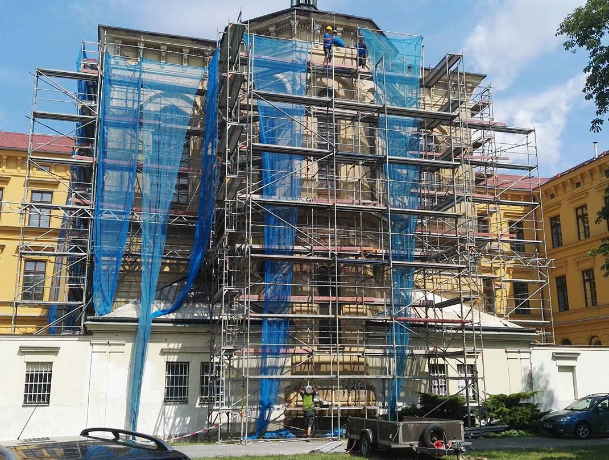

FASÁDY
Budovy a fasády
Lešení pro opravy fasád, historické objekty, věže i práce v interiéru.
Prohlédnout realizace
FASÁDNÍ LEŠENÍ
Pronájem a montáž fasádního lešení ALFIX 0.73, zavěšeného lešení a pracovních plošin. Dopravu zajišťujeme po celé České republice.

PRONÁJEM A MONTÁŽ

Vedle běžného fasádního lešení nabízíme také zavěšená řešení, prostorové konstrukce, stavební výtahy, kladky, sítě a plachty.
Připravíme individuální kalkulaci podle zaměření, rozsahu stavby a požadované doby pronájmu.
NAŠE VYBAVENÍ
Konkrétní sestavu a dostupnost vybavení upřesníme podle zakázky.
MOŽNOSTI
FASÁDY
Lešení pro opravy fasád, historické objekty, věže i práce v interiéru.
Prohlédnout realizaceMOSTY
Zavěšené konstrukce a pracovní plošiny pro mostní objekty, pilíře a jezy.
Prohlédnout realizaceFOTOGALERIE
POPTÁVKA
Pošlete rozměry a místo stavby. Domluvíme vhodnou sestavu, dopravu i montáž.
Kontaktovat nás